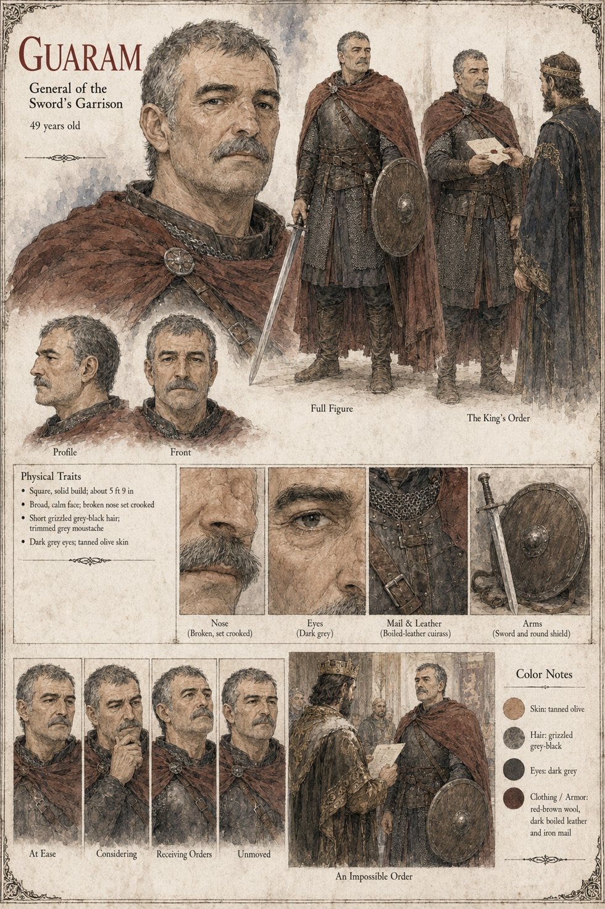

Guaram
General of the Sword’s garrison at Samaghvto, commander for fifteen years when the king calls him · nineteen years of ordinary battle · 49 on his sheet
The Sword of Orvaneti at Samaghvto is a garrison of two thousand spearmen who guard the Triple Synod and the Hall of the Unstrung Bow, and its general, in the twenty-ninth year, is a square, calm, middle-aged soldier with a way of receiving impossible orders as though they were requests for directions. He has commanded it for fifteen years. On the night Hierarch Gurgen leaves an arrow and a folio on the king’s table, the king sends for him before dawn to say that he wants a second arrow before the first is spent, that it is not to be bought, and that he wishes to know whether there is a man in Samaghvto who steals things for a living. There is. Guaram has known of Ioseb for eleven years and has never had the least reason to use the knowledge, which in a garrison commander is the highest form of professional discipline.
He stands beside the king on the wall above the Hall’s gate when the hail falls on the Elara host and says nothing, because nothing in nineteen years had prepared him for the sentence the king speaks to the air, I had pictured it smaller. In the thirtieth year he advises the king, when three Wardens who burned their arrows are brought to Samaghvto in chains, that a king who hangs three Wardens will never again hold a tower in Vashkeni by his word, and that the Hall of Oaths has its own justice for the breach of an oath, which a king may decline to hear; the king, tired, declines, and the Hierarch hangs them. In Garren of the Unclouded Year he asks the king whether there is anything in the Hall that can still be asked; the king answers that there is nothing, which was true, and that was the whole of the conversation.
He is the one who finds the ledger. The emperor of the Four Crowns leaves no heir and no will, only a ledger in his own hand listing the arrows and the dead, under his pillow. Guaram reads it standing, twice, and burns it in the brazier that had warmed a dog’s blanket for eleven years, not from shame, he would say in his last illness, but because it was the only thing in the whole affair that had been the king’s alone.
The manuscript gives his rank, years of service, calm and squareness, and no age or face. The sheet’s age of 49, solid build of about 5 ft 9 in, broad calm face with a broken nose set crooked, short grizzled grey-black hair, trimmed grey moustache, dark grey eyes, tanned olive skin, boiled-leather cuirass over iron mail, red-brown wool cloak, sword and round shield are its own, as are its panels At Ease, Considering, Receiving Orders and Unmoved and its scenes The King’s Order and An Impossible Order, in both of which a crowned king hands him a paper; the manuscript gives the order in speech, before dawn.
“a way of receiving impossible orders as though they were requests for directions”